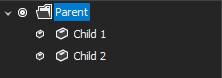

Tree Control
Overview
The Tree Control ITree is a hierarchical UI component used to represent structured data in a parent-child relationship. It allows users to navigate, select, edit, and manipulate nodes efficiently within a single unified interface.
The control supports:
- Hierarchical node structures
- Multi-selection
- Node searching
- Hit testing
- Dynamic loading
- Sorting and visibility management
Architecture
The Tree Control is composed of the following core components:
| Component | Description |
|---|---|
| ITree | Main control interface |
| ITreeNode | Represents an individual node |
| ITreeNodeCollection | Contains child nodes |
| ITreeNodeSelection | Represents selected nodes |
| TreeHitTestData | Result of hit testing |
| ITreeHitTestLocation | Describes UI region |
| ITreeNodeSearchCondition | Defines search logic |
Creating a Tree
ITree tree = treeFactory.Create(eventHandlers);
Notes
- Always create instances using ITreeFactory
- The caller is responsible for disposal
- Event handlers define interaction behavior
Working with Nodes
Creating Nodes
ITreeNode root = tree.RootNodes.Append("Root");
ITreeNode child = root.Nodes.Append("Child Node", dataObject);

Node Properties
| Property | Description |
|---|---|
| Text | Display text |
| Data | Associated data object (read-only) |
| Tag | Custom runtime metadata |
| Visible | Determines visibility |
| ImageKey | Icon key |
| ExpandedImageKey | Icon when expanded |
Node Hierarchy
ITreeNode parent = tree.RootNodes.Append("Parent");
parent.Nodes.Append("Child 1");
parent.Nodes.Append("Child 2");

- Nodes can contain unlimited child nodes
- Structure forms a recursive hierarchy
Selection
Access Selection
foreach (ITreeNode node in tree.NodeSelection)
{
Console.WriteLine(node.Text);
}
Check Selection
if (tree.NodeSelection.Contains(node))
{
Console.WriteLine("Node is selected");
}
Key Notes
- Selection is read-only
- Managed internally by the tree
- Used for:
- Drag & drop
- Clipboard operations
Focus Management
tree.FocusedNode = node;
- Gets or sets the currently focused node
- Must belong to the same tree instance
Hit Testing
Hit testing determines what part of the tree is under a given point.
Example
TreeHitTestData hit = tree.HitTest(mousePoint);
if (hit.Node != null)
{
if (hit.Location.IsText)
Console.WriteLine($"Text clicked: {hit.Node.Text}");
if (hit.Location.IsExpandButton)
Console.WriteLine("Expand button clicked");
}
Hit Test Result
| Property | Description |
|---|---|
Node |
Node at location (may be null) |
Location |
UI region information |
Searching Nodes
Custom Search Condition
public class TextSearchCondition : ITreeNodeSearchCondition
{
private readonly string text;
public TextSearchCondition(string text)
{
this.text = text;
}
public bool IsMatch(ITreeNode node)
{
return node.Text.Contains(text, StringComparison.OrdinalIgnoreCase);
}
}
Usage
var results = tree.Find(new TextSearchCondition("Item"), true);
Batch Updates
Using BeginLoad / EndLoad
tree.BeginLoad();
try
{
// Bulk node creation
}
finally
{
tree.EndLoad();
}
Benefits
- Prevents UI refresh overhead
- Improves performance significantly
Manual Updates
tree.BeginUpdate();
try
{
// Modify nodes
}
finally
{
tree.EndUpdate();
}
Visibility Control
Check Visibility
bool visible = tree.IsNodeVisible(node);
Ensure Visibility
tree.MakeNodeVisible(node);
Clearing Data
tree.ClearNodes();
tree.ClearSelection();
Sorting
tree.CustomSort = new CustomComparer();
- Allows custom node ordering
- Applies across the tree
Dynamic Loading (Lazy Loading)
Used when loading large datasets.
node.HasChildren = true;
Load on Demand
void OnBeforeExpandNode(ITreeNode node)
{
if (!node.Nodes.Any())
{
node.Nodes.Append("Loaded dynamically");
}
}
Drag and Drop
Selection plays a key role in drag-and-drop operations.
Typical workflow:
- Get selected nodes
- Start drag operation
- Use hit testing to determine drop target